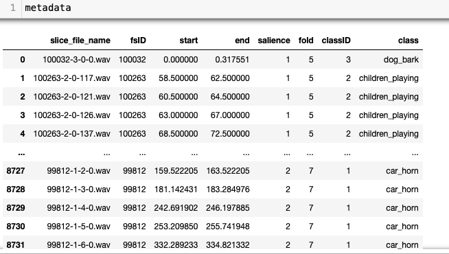
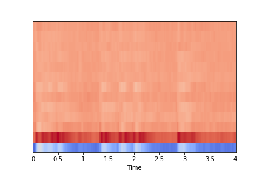

Urban Sound Classification using Machine Learning: Data Processing
The Urban Sound dataset provides 8,732 audio files formatted as .wav, in total 7GB.

According to the authors, the audio files were collected from
freesound.org, where
the source of each audio file come from and it is recorded in
the 'fsID' column in the metadata table. The duration of each audio can be
obtained from 'end' - 'start', which gives maximum 4 second. The gun shot sounds are shortest.
To carry out the machine learning, we need input and algorithm. Can we use
the wav files as input? Even without knowing the audio features, immediate answer is 'maybe not' because of the file size.
The running time for training will be very long.
Then, what and how to extract from the wav files?
Audio data vs. MFCC
We took the dataset and ran it through librosa libraries to convert the wav files into MFCC files. The Mel-Frequency Cepstral Coefficients (MFCC) is a way of capturing the spectrum of the voice (phoneme) so that it can used in voice recognition and machine learning.
import librosa.display
import matplotlib.pyplot as plt
import IPython.display as ipd
def display_wav(signal,fn):
librosa.display.waveplot(signal, sr=sr)
plt.xlabel("Time")
plt.ylabel("Amplitude")
plt.savefig(fn, Bbox='tight')
plt.show()
The following graphs and sounds show how much MFCC contains the original data.
Dog_bark: orginal
signal, sr = librosa.load("7383-3-0-0.wav", sr=22050)
display_wav(signal, '../images/dog_bark_plot.png')

Dog_bark: reversed
import soundfile as sf
mfccs = librosa.feature.mfcc(signal,sr=sr,n_mfcc=13)
wav = librosa.feature.inverse.mfcc_to_audio(mfccs)
display_wav(wav, '../images/dog_bark_reversed.png')
MFCC data
The returned MFCC from librosa.feature.mfcc() is a two-dimensional array of integers.

In the image, the vertical height is determined by the number of coefficients of MFC(= n_mfcc)
and the width is determined by the sample rate(sr) and duration. The left image has n_mfcc=13 as height,
and 173 as width. Each small square inside represents a number(amplitude).
The returned MFCC has, in this example, a two-dimensional array of 13 by 173.
Eunjeong Lee, ejlee127 at gmail dot com, last updated in Nov. 2020